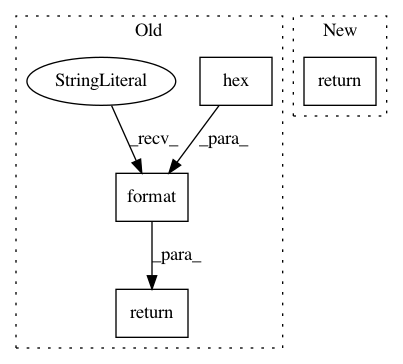

1f54acd27488f089f3211c08aef5d9927183d1c6,python/ray/exceptions.py,UnreconstructableError,__str__,#UnreconstructableError#,179
Before Change
self.object_ref = object_ref
def __str__(self):
return (
"Object {} is lost (either LRU evicted or deleted by user) and "
"cannot be reconstructed. Try increasing the object store "
"memory available with ray.init(object_store_memory=<bytes>) "
"or setting object store limits with "
"ray.remote(object_store_memory=<bytes>). See also: {}".format(
self.object_ref.hex(),
"https://docs.ray.io/en/latest/memory-management.html"))
class RayTimeoutError(RayError):
Indicates that a call to the worker timed out.
After Change
self.object_ref = object_ref
def __str__(self):
return (
f"Object {self.object_ref.hex()} is lost "
"(either LRU evicted or deleted by user) and "
"cannot be reconstructed. Try increasing the object store "
"memory available with ray.init(object_store_memory=<bytes>) "
"or setting object store limits with "
"ray.remote(object_store_memory=<bytes>). "
"See also: https://docs.ray.io/en/latest/memory-management.html")
class RayTimeoutError(RayError):
Indicates that a call to the worker timed out.
In pattern: SUPERPATTERN
Frequency: 3
Non-data size: 4
Instances
Project Name: ray-project/ray
Commit Name: 1f54acd27488f089f3211c08aef5d9927183d1c6
Time: 2020-08-23
Author: rkooo567@gmail.com
File Name: python/ray/exceptions.py
Class Name: UnreconstructableError
Method Name: __str__
Project Name: pgmpy/pgmpy
Commit Name: fdaeca971143d2d8ff2423765accf34a0801795d
Time: 2020-06-30
Author: ankurankan@gmail.com
File Name: pgmpy/factors/discrete/JointProbabilityDistribution.py
Class Name: JointProbabilityDistribution
Method Name: __repr__
Project Name: ray-project/ray
Commit Name: 1f54acd27488f089f3211c08aef5d9927183d1c6
Time: 2020-08-23
Author: rkooo567@gmail.com
File Name: python/ray/actor.py
Class Name: ActorHandle
Method Name: __repr__